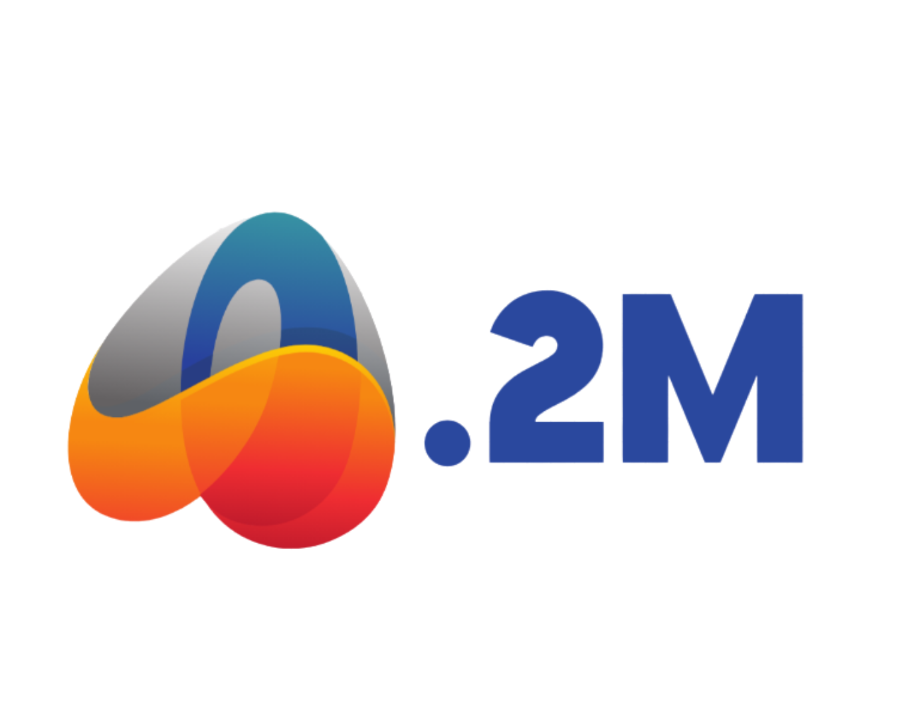

Website Portofolio Pribadi
Website sederhana untuk memperkenalkan identitas, keahlian, dan hal yang sedang dipelajari sebagai mahasiswa RPL.
Teknologi: HTML, CSS

Mahasiswa S1 Rekayasa Perangkat Lunak
NIM 2403020066
Jelajahi Portofolio ↓01 / INTRODUCTION
Halo, saya Azka Maulidi, Guru sekaligus Bendahara Tata Usaha di PP. Darussalam Bogor dan Mahasiswa Semester 5 di Prodi RPL, Fakultas Sains dan Teknologi, Universitas Darunnajah Jakarta. Saya tertarik pada teknologi, pengembangan digital, pemrograman, dan keamanan siber.
"Mengabdi dengan ilmu, bertumbuh melalui pembelajaran, dan berinovasi dengan teknologi."
02 / SKILLS
Kompetensi yang saya kembangkan dalam bidang teknologi, pendidikan, dan administrasi.
03 / SELECTED WORK
Website sederhana untuk memperkenalkan identitas, keahlian, dan hal yang sedang dipelajari sebagai mahasiswa RPL.
Teknologi: HTML, CSS
Pengembangan sistem absensi berbasis RFID untuk mencatat kehadiran guru-guru dalam pelaksanaan salat lima waktu di Pondok Pesantren Darussalam Bogor. Proyek ini bertujuan membantu proses pencatatan kehadiran agar lebih praktis dan terorganisasi.
Status: Dalam Pengembangan
Fokus: RFID, Sistem Absensi, dan Otomatisasi
Deskripsi proyek disusun berdasarkan pengalaman dan pengembangan sistem yang telah saya kerjakan..
04 / ABOUT THIS SITE
Website ini dibuat sebagai proyek mata kuliah Komputasi Awan. Kode akan disimpan di GitHub dan dipublikasikan menggunakan GitHub Pages serta Netlify.
Versi: 2 diperbarui 14 Oktober 2026
05 / GET IN TOUCH
Hubungi saya melalui email berikut.
akunkuliahazka11@gmail.com